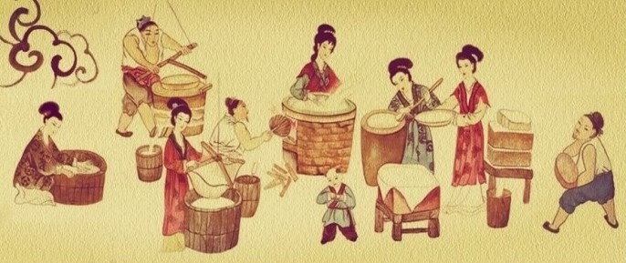

Sejarah

Menurut situs Kompas.com, teori paling umum menyatakan bahwa tahu kedelai pertama kali ditemukan di China Utara sekitar 164 Sebelum Masehi, oleh Lord Liu An seorang pangeran Dinasti Han.
Cerita rakyat Tiongkok sering mengaitkan penemuan-penemuan penting dengan tokoh sejarah yang terkenal. Teknik-teknik produksi tahu kedelai mungkin sudah ada jauh sebelum masa ini.
Bubur Kacang Kedelai
Teori lainnya mengatakan bahwa metode untuk memproduksi tahu kedelai ditemukan secara tidak sengaja ketika bubur kacang kedelai rebus dicampur dengan garam laut yang tidak murni. Garam tersebut mengandung garam kalsium dan magnesium yang menyebabkan campuran kedelai mengental dan menghasilkan gel seperti tahu kedelai. Pasalnya susu kedelai telah dimakan dikonsumsi sebagai sup gurih sejak zaman kuno.
Teknik Mongolia
Teori ketiga mengatakan bahwa orang China kuno mempelajari metode untuk mengentalkan susu kedelai dengan meniru teknik pengadukan susu dari orang Mongolia atau India Timur.
Terlepas dari kemajuan China, tidak ada teknologi atau pengetahuan tentang membudidayakan dan memproses produk susu yang ada dalam masyarakat China kuno.
Buktinya, teori ini terletak pada kesamaan etimologis antara istilah China untuk susu fermentasi Mongolia dan istilah doufu atau tahu.
Manfaat Tahu
Menurut situs Alodokter.com, Sebagai sumber protein, ada begitu banyak manfaat tahu yang dapat diperoleh. Tak hanya protein, beragam kandungan nutrisi lain di dalamnya juga diketahui baik untuk kesehatan, mulai dari menjaga kekuatan tulang hingga mencegah kanker.
Selain sebagai sumber protein, tahu juga mengandung beragam nutrisi, seperti karbohidrat, serat, dan lemak. Kandungan asam amino esensial dan berbagai mineral, seperti kalsium, selenium, fosfor, magnesium, dan zat besi, pun dapat ditemukan di dalam tahu.
Pembuatan Tahu Putih
Setelah mengetahui tentang sejarah tahu sekarang kita akan memberitahu proses pembuatannya, tahu merupakan jenis makanan yang sudah tidak asing lagi bagi kita. Rasa yang enak menjadikan tahu sebagai produk yang digemari semua lapisan masyarakat. Meskipun kita sering mengonsumsi tahu, pernahkah kita memikirkan bagaimana makanan tersebut diproduksi? Berikut merupakan proses pembuatan tahu.
Bahan baku:
- Kacang Kedelai
- Air
- Garam
- Cuka
alat:
- Bak Untuk Perendaman Kacang
- Mesin Giling(Blender)
- Tempat Perebusan
- Kain Tipis
- Alat Cetak(toples)
- Kompor
- Bak Untuk Menampung Air Rebusan
Proses Pembuatan
- Perendaman
Perendaman dilakukan untuk memperlunak struktur sel kedelai sehingga akan mengurangi energy yang diperlukan selama penggilingan. Selain itu struktur sel yang lunak juga akan mempermudah mengekstrak sari dari ampasnya. Perendaman umum dilakukan berkisar antara 3-4 jam untuk kedelai impor dan 4-5 jam untuk kedelai lokal.
- Penggilingan
Proses selanjutnya yaitu penggilingan biji kedelai yang bertujuan untuk memperkecil partikel kedelai sehingga nantinya mudah untuk ekstraksi protein ke dalam susu kedelai.
- Pemasakan/perebusan
Jika kedelai selesai dihaluskan, maka bentuk kedelai seperti susu kedelai. Langkah selanjutnya adalah merebus kedelai hingga mendidih. Sebelum kedelai mendidih, siapkan terlebih dahulu air dingin. Air dingin ini digunakan untuk menambahkan rebusan kedelai jika sudah mendidih dan mengeluarkan busa. Karena rebusan kedelai akan muncul busa jika mendidih.
Saat kedelai sudah mendidih dan mengeluarkan busa, tambahkan air dingin sedikit demi sedikit. Lakukan cara tersebut setiap kali busa muncul hingga busa habis. Setelah busa habis, biarkan rebusan kedelai di atas kompor dengan api kecil selama 20 menit. Lalu, matikan kompor dan biarkan rebusan kedelai dingin.
- Penyaringan
Langkah selanjutnya dalam membuat tahu adalah menyaring rebusan kedelai. Setelah kedelai direbus, maka kedelai akan nampak seperti bubur. Bubur kedelai ini harus disaring bubur dan dicampur dengan air asam sambil diaduk secara berlahan-lahan hingga menggumpal.
Peras gumpalan kedelai tersebut hingga airnya keluar semua. Ampas kedelai jangan dibuang. Karena masih bisa dimanfaatkan menjadi makanan. Lalu, air hasil saringan direbus kembali, namun tidak sampai mendidih. Air kedelai tersebut didiamkan hingga menggumpal.
- Pemisahan air
Setelah menggumpal, tahap selanjutnya dalam membuat tahu adalah membuang air yang ada digumpalan tersebut dan menyiapkan cetakan tahu. Karena tahu sudah siap untuk dicetak. Siapkan cetakan tahu sesuai dengan yang diinginkan.
Karena gumpalan calon tahu tersebut bisa dicetak sesuai dengan selera kamu. Namun, pada umumnya tahu dibuat berbentuk kotak saja. Hal ini jauh lebih mudah dibandingkan membuat tahu dengan bentuk lain.
- Pencetakan tahu
Proses pencetakan menggunakan saringan tahu dan tahu di pres agar tahu lebih padat. Kamu juga bisa menggunakan cetakan khusus untuk mempermudah kamu dalam mencetak tahu. Biasanya, para pembuat tahu sudah menyediakan cetakan sendiri dalam skala besar untuk mempermudah dalam mencetak. Tahu pun siap dipasarkan.